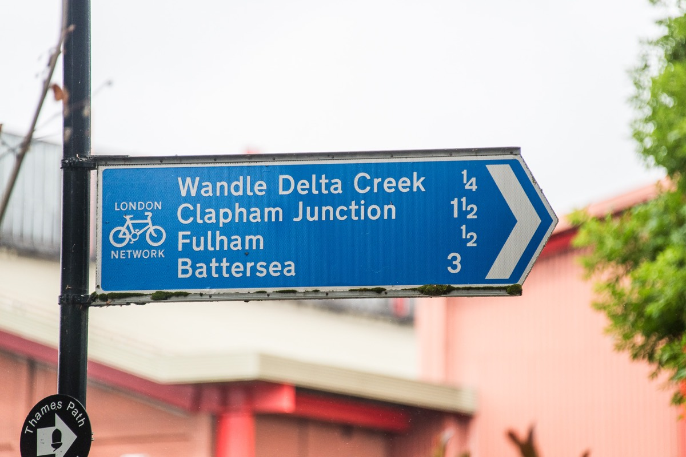
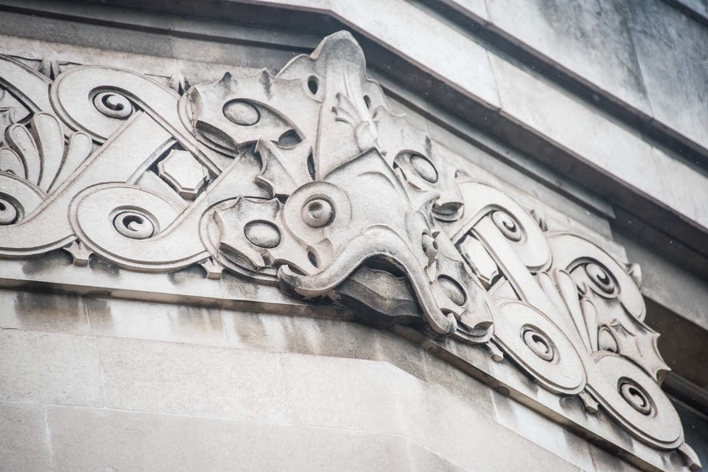
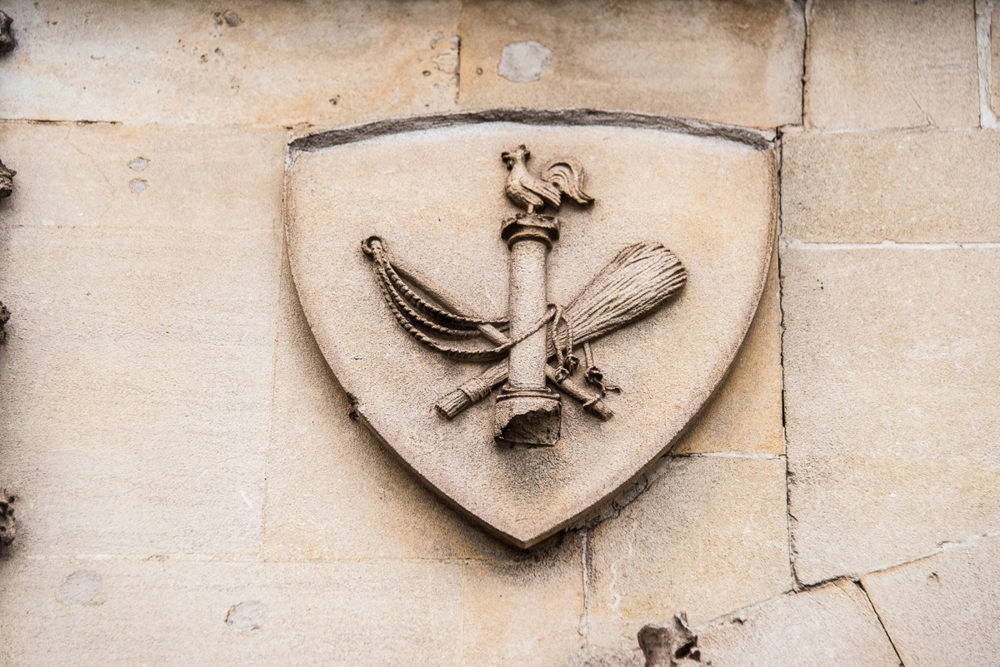
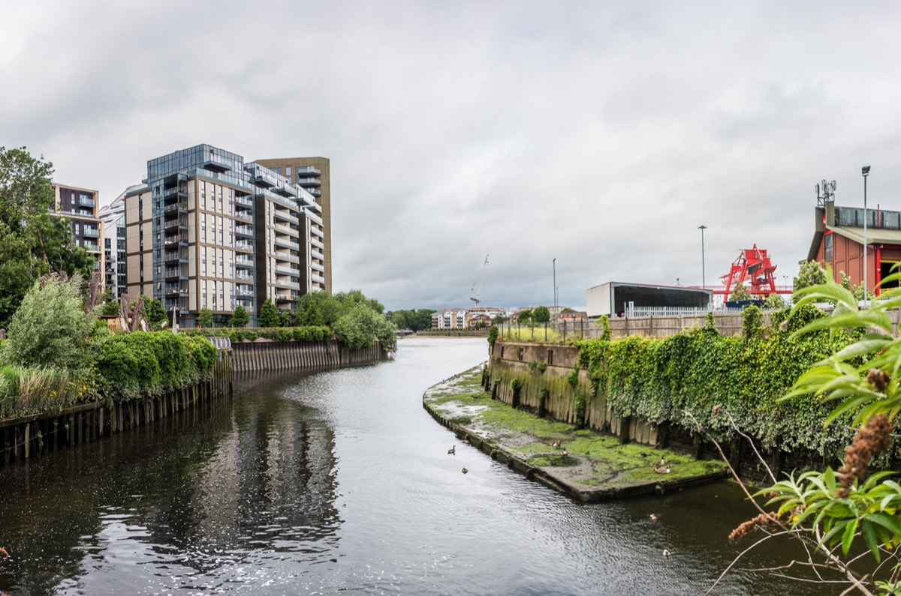
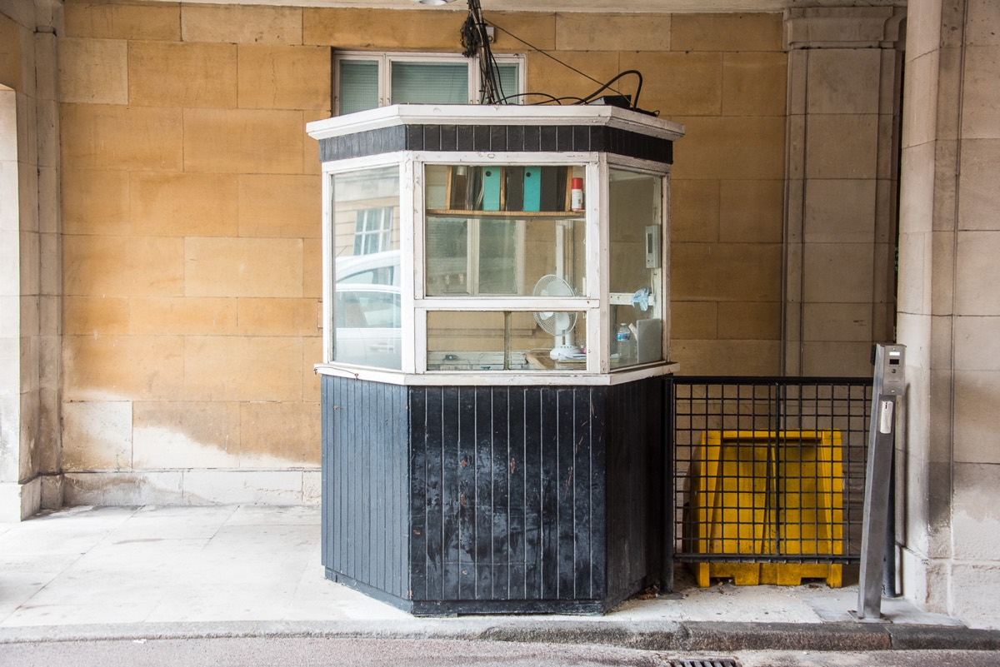
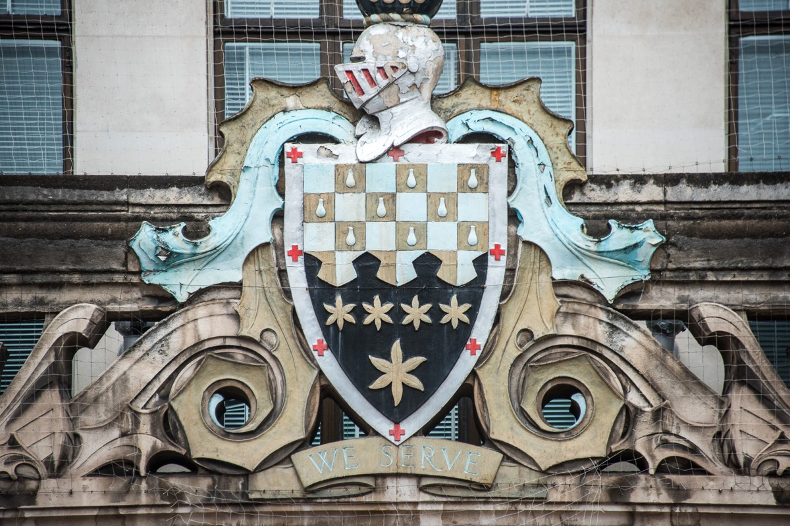

A Town Centre That Changes
Without Anyone Noticing
The guide has lived in this corner of South-West London for decades, and has spent over a decade trying to document it. He is not a trained historian, he says, and not a trained architect. He is, very obviously, someone who cannot stop looking.
Today's walk is part of the London Festival of Architecture — the largest architecture festival in the world, running events across the city over a month each summer. This year the festival has chosen Wandsworth: the town centre and the Delta, the point where the River Wandle drains into the Thames. Both are, the guide promises, fascinating, because all this goes on and on over the years and you never quite know what's happening.
He did an experiment about a year ago. He started doing tours around here, aware that a giant storyteller was about to materialise in the middle of Wandsworth and that hardly anyone had noticed. Unless you know where to look, you're not going to know anything about it. That gap — between what is happening and what is being noticed — is what these walks are for.
A musician named Fred accompanies the group today, playing live at intervals along the route. Wandsworth, the guide will explain, has a musical history that most of its residents have no idea about. Fred is partly proof of that tradition, and partly — on a grey afternoon through a one-way system — a morale booster.
The Arndale Centre &
Arriving from the North
The guide sets the scene by going back to the summer of 1971 — the year Wandsworth's Arndale Centre opened. He asks the group to imagine what the world was like then: decimalisation had just happened, men had walked on the moon, it was quite an exciting time.


The Arndale Centre was a phenomenon of postwar British urban planning: a covered shopping mall, American in inspiration, dropped into the centre of existing towns with a confidence that sometimes shaded into brutality. Manchester had one. It was enormous. The guide arrived in Wandsworth from Manchester, stepped off into the town centre for the first time, and stopped.
"I took one look and there was an Arndale Centre. I thought the only Arndale Centre in the world was in the middle of Manchester, and it was about five times bigger than that one — but it made me feel at home, and in I went."
— The guide
The Wandsworth Arndale — now trading under different names and ownership but structurally largely unchanged — sits at the heart of a town centre that has been in almost continuous transformation since that opening. What has replaced it around the edges is the subject of most of the rest of this walk.
The Funk Academy,
The XX & Dennis Bovell
Wandsworth town centre, the guide concedes, can feel grim. One-way system, heavy traffic, tower blocks. So before the group gets too deflated, he introduces what he considers one of the area's greatest secrets: its musical history.
Central Wandsworth, it turns out, is a cradle of some of the most significant British popular music of the last fifty years — and almost nobody who doesn't actively go looking will know this. The story has been told in a Wandsworth Borough of Culture podcast series, Our Music, Our Freedom, and it begins in the schools.
Spencer Park School no longer exists as such, but in the 1970s and 1980s it was producing musicians from often disadvantaged backgrounds, thanks to progressive music education that took pupils seriously. The Elliott School in Putney — just up the road — became known informally as the Funk Academy.
Dennis Bovell, one of the founding figures of British reggae and dub, came out of this south London scene — his crew, Matumbi, and his later work as a producer shaped a generation of British music.
The XX — the critically acclaimed indie group whose debut album became one of the defining British records of the late 2000s — came from here in Wandsworth. Three internationally significant acts, separated by decades, rooted in the same few square miles. The schools, the community, the progressive education: these things mattered.
The guide is careful not to overclaim connections he can't fully verify. But the pattern is striking enough that the Borough of Culture thought it worth a full podcast series. Fred plays a few bars. The rain, briefly, stops.
Where the River
Meets the Thames
The River Wandle gives Wandsworth its name — the settlement at the mouth of the Wandle. For most of the 20th century the river was industrialised, polluted and largely invisible, running behind factories and under roads, known mainly as a drainage channel rather than a river. The last few decades have seen a sustained effort to restore it.

The Delta — the area where the Wandle meets the Thames — is one of the foci of this LFA tour, and one of the zones where change is most concentrated. New residential towers, public realm improvements and the slow recovery of the riverbank ecology are all converging here simultaneously.
Wandsworth — Wendles-wurth in early medieval documents — means the farmstead or enclosure by the Wandle. The river name is older still, possibly British Celtic in origin. The town grew precisely because of the confluence: freshwater, tidal access to the Thames, and the river's power, which drove mills along its length for centuries.
By the 19th century the Wandle was one of the most industrialised rivers in England per mile. Calico printing, snuff milling, copper beating, leather tanning. The water ran so polluted that the salmon that had once been abundant — and that gave some of the Wandle-side pubs their names — had long since gone.
The walk pauses at the Delta to take in what is being built. The scale of change is hard to absorb all at once. The guide suggests this is partly by design: large developments arrive incrementally, each application considered individually, and by the time you step back to look at the whole, the skyline has shifted around you.
Artisan Tower,
Wandsworth Exchange & the Gasworks
Three towers dominate discussion on this stretch of the walk. The guide has strong views on all of them, delivered with the resigned affection of someone who has been watching this skyline change for three decades.

The first tower — tall, glassy, conspicuous — is officially called Artisan Tower. The guide cannot quite get past the name. An artisan tower. He says it with a pause. The implication — that naming a large-scale residential development after artisanal craft might be doing some heavy marketing lifting — hangs in the air without anyone needing to say it aloud.
His preferred name for it, offered without much elaboration, is "Food Vicious Tower." The group takes a moment. The name lands. Nobody asks him to justify it further.
The second tower is Wandsworth Exchange — visible from most of the route but one the guide says he only worked out the name of fairly recently. It had been there, growing, visible, and somehow nameless to him until he actively went looking. That, he says, is how most of this development works on the people who live near it.
The third and most significant is part of the gasworks development — a large-scale regeneration of the former gas infrastructure site, which the guide describes as really quite something. It sits towards the end of the tour's route, and he builds anticipation for it throughout.
"Only worked out the other day what it's called. It's called Wandsworth Exchange. And these ones sort of popping up — now two massive ones, and then another one which doesn't have a name yet, but it's part of the gasworks development, which is really quite something."
— The guide
The Tooting VC
& a Village in France
One of the walk's most unexpected detours is into the First World War. Outside the Town Hall, the guide points to a commemorative stone in the garden at the front, easy to miss, marking a Tooting man called Corporal Edward Foster — known locally, with evident affection, as Tiny Ted Foster.
Foster won the Victoria Cross during the First World War, leading the Wandsworth Battalion in the liberation of a small French village called Écoust-Saint-Mein in 1917. Wandsworth is twinned with this village — a quiet, largely unremarked pairing that most residents know nothing about.
To mark the centenary of the liberation in 2017, the village's communist mayor — at his own expense — commissioned and erected a memorial to Foster in the French countryside. It stands about thirty feet tall, with his photograph and name and the word Wandsworth, in the middle of farmland on the A26.
A memorial to a Tooting binman, paid for by a French communist mayor, standing in a field visible from the Paris road. the guide considers it well worth a detour if you are ever driving through that part of northern France.
The connection between the Town Hall and its flag pole becomes clearer here: the spindle-shaped, sage-green finial on the flagpole is based on the same design as the French memorial — the borough's way of keeping Foster visible in its own skyline, once you know to look.
The Friezes, the Films
& the One-Way Catastrophe
The walk ends at the Town Hall, a handsome 1935 building that the guide clearly loves and feels slightly sorry for. It is, he says, basically an antique — beautiful, listed, and cut off from its own town by the infrastructure that surrounds it.

The building's upper exterior carries a long frieze of sculpted figures, each representing one of the parishes that made up the old Borough of Wandsworth at the time of construction: Clapham, Putney, Streatham, Tooting and Wandsworth itself. Battersea was not yet included. The figures carry symbols of each area's identity — Huguenots, Roman soldiers, the Surrey Iron Railway (the world's first public railway, running through Wandsworth), First World War soldiers, the Mayor of Garrett, the early modern mock-democracy that held raucous sham elections in the area and whose comic ceremony somehow outlasted the serious politics of its era.
The guide admits he has spent years trying to memorise what all the frieze figures represent. He can pick out the Huguenots, the Roman soldiers, a cricketer — Tooting Common, perhaps — and literary figures including Samuel Johnson, connected to his time in Streatham, and St Anselm, Archbishop of Canterbury, whose connections to the area are oblique enough that the guide himself is not entirely sure of the link.
A large explanatory tablet on the building wall gives the full account. The stone is fading badly. the guide recommends looking soon, before the text becomes entirely illegible.
Inside, the building has a marble hall that has proved extremely attractive to film productions. The Night Manager is among those to have used it. Most staff, the guide notes, are now working from home, and the council makes significant income from location fees to supplement the building's running costs. It is beautiful, he says. It is also increasingly a period piece.
The Town Hall sits in the middle of Wandsworth's one-way gyratory — a postwar traffic scheme that wrapped the town centre in a loop of fast-moving lanes on the assumption that more road capacity would reduce congestion. It did the opposite. Every traffic planner now knows that induced demand fills new lanes as fast as they are built.
Before COVID, there was a realistic plan to remove the gyratory. The cost was estimated at £100 million. There was a piece of land whose ownership was unclear, and once that had been resolved, the scheme could proceed. TFL had committed funding. The design was good — the intention was to replace the traffic lanes with a large public garden. The people who live nearby, in high-pollution conditions directly adjacent to the A3, would have benefited enormously.
Then COVID happened. TFL lost the money. Costs rose. The plan stalled, and has not recovered. the guide does not think it will happen now. Every traffic planner he speaks to agrees the gyratory is a disaster. Nobody currently has the money to fix it.
"No traffic planner now would ever sign something like this off. What they want to do is reduce it to one lane — because then the cars go. It was an absolute nightmare and disaster. And it's such a shame."
— The guide
The pub next to the Town Hall — the one the guide considers somewhat overlooked — has its own history: it is where the directors of the early Wandsworth gas company sat around a table in the 1830s and drew up their plans; where railway meetings were held; where some of the groundwork for the town's Victorian infrastructure was laid. The guide ran this walk six months ago and a couple of people stayed on at the end and had a drink there. He recommends the same.